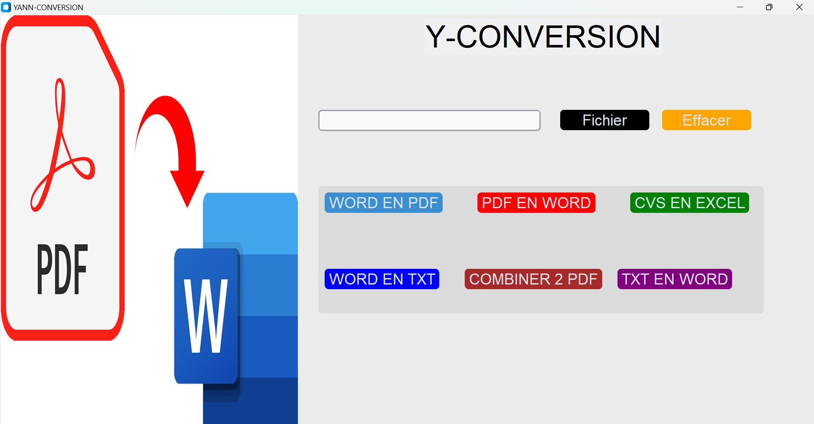
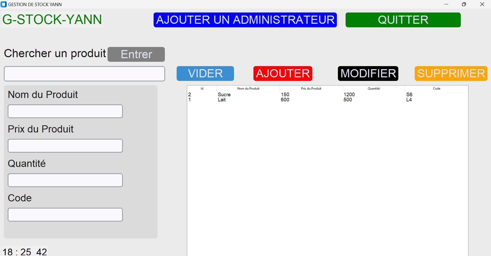

Y-CONVERSION
Y-CONVERSION est une application de conversion
de fichiers numériques.Elle propose de nombreuse
option de conversion de fichier notamment en word
en pdf , en cvs , en txt et de plus la combinaision
de deux fichiers pdf en un . C'est pas génial ca ? ❤️

G-STOCK
G-STOCK est une application de gestion de stock.
Elle facilite la gestion de stock,en proposant de nombreuse fonctionnalités pour gérer le stock d'une
quelconque structure souhaitant gérer son stock.
Sa particularité est la faciliter de son utilisation .
